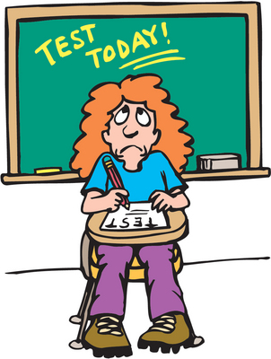

Recently, as it was announced about scheduling online examination in most universities, students have been observed to exhibit stressful behavior and anxiety. The question is why students are so exam-conscious? Well, one pressing answer is social pressure specially of parents’ and peers’. The students are often judged by the result they get in examinations, regardless of the theoretical and practical understanding. No one seems concerned about the level of knowledge, student have attained. We have often confronted situation where a student of electrical or civil engineering is being asked about his results in recent examinations and he is totally judged on basis of result. For example, an electrical engineering student is never being asked about how to manage electricity load considering different sources of generation? Or no one asks a civil engineer about what type of construction material is good for hot weather? This certainly aids to make students examination-conscious.
To much extent, out-of-common assessment of students over their knowledge and skills is indeed denting their endurance. Arguably, this exam-culture is discouraging students from learning. Even, students themselves believe that they are doing well if they get good grades in examination. Recently, in order to address this, the PEC had signed International Professional Engineer Agreement (IPEA) aka Washing Accord. Consequently, following guidelines from PEC, most universities have adapted OBE model for undergraduate programs in engineering. However, due to heedlessness of senior faculty in universities, the syllabus could not be streamlined to acceptable extent. This job was left for junior faculty, which could not do justice to syllabus design unfortunately. Except the medical education, the rest of the degree programs were deprived of this attention.

Another reason is persuasive strategy of teachers, intended to motivate students. However, this strategy not always works, as it often carries fear. The examination performance is associated with examination-stress to a great extent. The class performance or study skills are often misrelated for performance. Indeed, a research, comparing the relative effects of study skills of students with their negative cognitions (or being to exam-stress), found that the latter directly interfere with performance in examination (Musch and Broder, 1999).
Possibly, the exam-stress would be counting on more reasons, for example time pressure during examination, crowded examination venue, etc. Much of the stress can be alleviated by adapting strategies.
The parents should also set practical expectations. They should encourage learning skills, rather than eyeing grades. Also, there is something on part of institutions to address the issue. Considering the situation stated, the examination strategies needs a revamp and be conducted at appropriate timing of the course of study and in an effective manner.
Back to Home Page of Abdul Hanan Sheikh